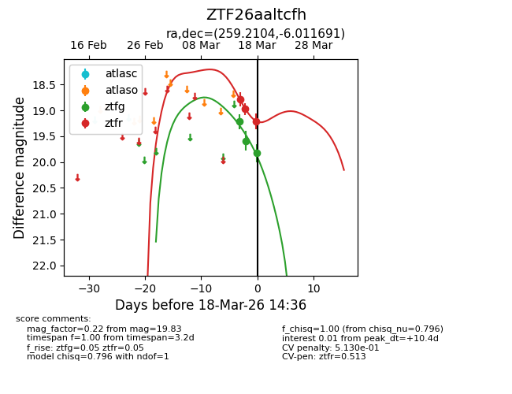
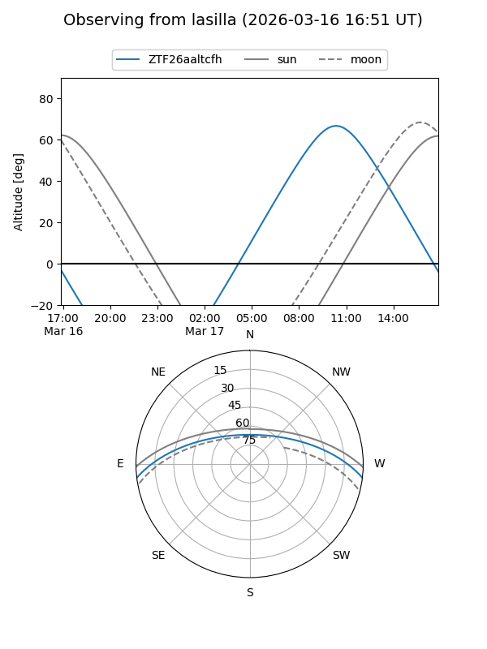
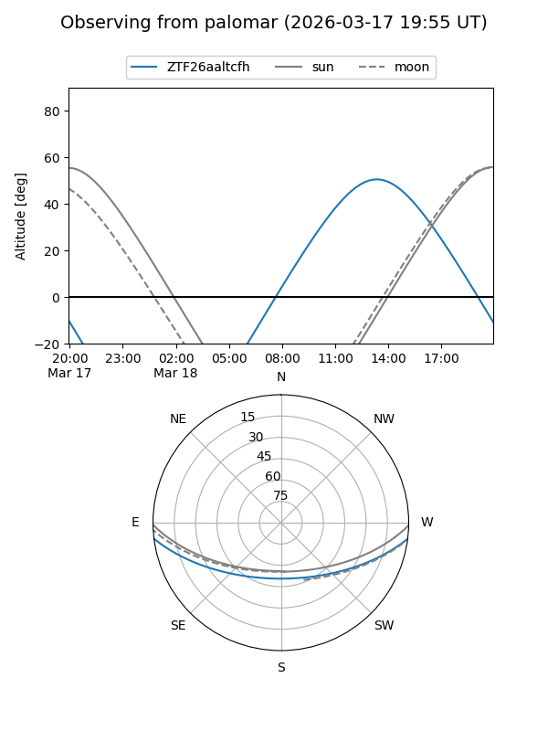
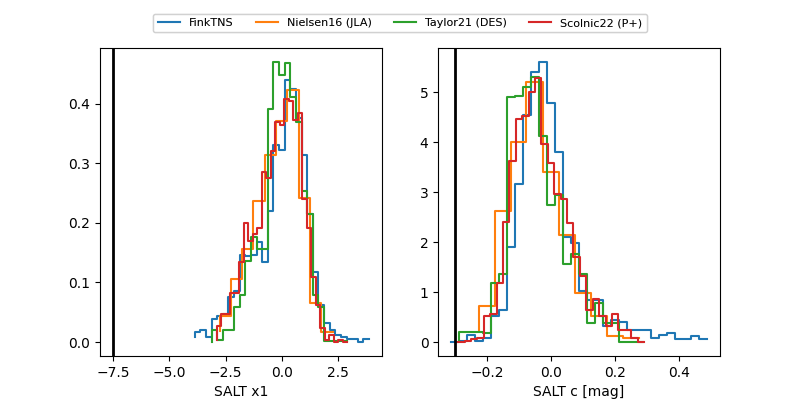

ZTF26aaltcfh
Target ZTF26aaltcfh at 2026-03-18 14:38
Aliases and brokers:
FINK: link
Lasair: link
ALeRCE: link
alt names
ZTF26aaltcfh (ztf,fink_ztf)
Coordinates:
equatorial (ra, dec) = 259.2104,-6.01169
equatorial (HMS+DMS) = 17:16:50.49,-06:00:42.09
galactic (l, b) = (16.1277,+17.89573)
Flags:
likely cv
Photometry:
last ztfg=19.83, ztfr=19.21
3 ztfg, 3 ztfr detections
Lightcurve

Visibility


Additional plots
